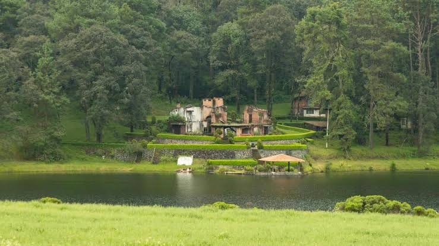
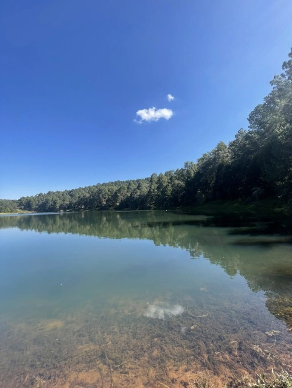
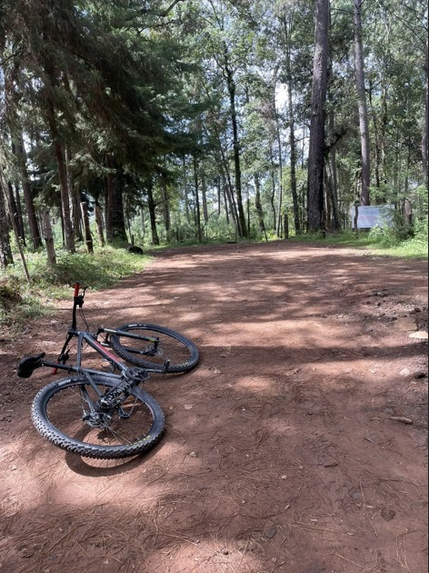

Entre la vegetación y los jardines se encuentran los restos de una antigua construcción que conserva un ambiente histórico y misterioso. Su arquitectura, rodeada de árboles, áreas verdes y hermosos paisajes, crea un espacio lleno de tranquilidad. Este lugar permite apreciar el contraste entre las construcciones antiguas y la belleza natural que caracteriza a Valle de Bravo. Es un sitio que invita a contemplar el entorno y conocer parte del atractivo histórico y paisajístico de la región.

Sus aguas reflejan el cielo azul y los árboles que la rodean, creando un paisaje lleno de armonía y belleza. La tranquilidad del agua, la vegetación y el ambiente natural hacen de este espacio un lugar especial para descansar y disfrutar del paisaje. Además, permite observar la riqueza natural de la zona, apreciar los reflejos del bosque y disfrutar de momentos de conexión con la naturaleza. Es un rincón ideal para tomar fotografías y admirar la tranquilidad de Valle de Bravo.

Los caminos rodeados de altos árboles permiten recorrer el bosque en bicicleta o caminando, disfrutando del aire fresco, la tranquilidad y la belleza de la naturaleza. Sus senderos de tierra ofrecen un entorno agradable para realizar actividades recreativas y explorar los paisajes naturales. Durante el recorrido es posible apreciar la vegetación, escuchar los sonidos del bosque y disfrutar de la sombra que proporcionan los árboles. Es una excelente opción para quienes buscan aventura, descanso y convivencia al aire libre en Valle de Bravo.
¡Conoce, disfruta y comparte nuestras maravillas!
VER VIDEO EN TIKTOK